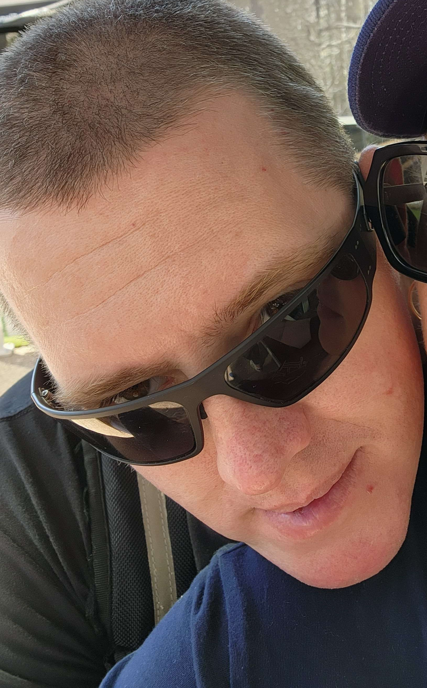
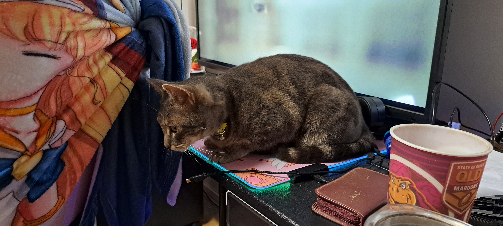

ePortfolio - Damian Whitman

Personal Information
I am a huge nerd. I love video games and stick more to the mmorpgs as I love the stories and fluff that come with them. I have three cats (1 Adult (Beans) and 2 Kittens (Zort and Lux)).
I am Australian Born and Bred. After completing year 12 in 2000 I went to work in the Trade-Base Timber and Hardware retail, this has continued to current day with little variation. I have completed some Tertiary and Further education over the years;
2022 – First Aid Certificate.
2016 - Certificate II in Skills for Work and Vocational Pathways
2013 - Certificate III in Warehousing Operations.
2011 - Certificate II in Transport and Logistics (Warehousing and Storage).
In my professional career I have focused quite heavily on Integrity of character, Efficiency of task completion, and Honesty in owning my mistakes. I have made it a personal mission not to engage in office politics as I have found that it serves no purpose but to breed hate and discontent.

Here is the required Cat Tax. Beans is the older cat, and Zort (white) and Lux (grey) are my Kittens.
Interest in I.T.
I have always been interested in technology in general, and I.T. specifically, having grown up in the I.T. boon period of the late 1980’s through to the 2000’s. It started with playing educational video games (where in the world is Carmen San Diego), and progress from there the Doom, RoTT, Quake, Diablo, and continued to the current generation of video games. Along the way I became increasingly interested in the tech and security side of I.T. Once I decided that I wanted a change of career the only option I was interested in was the I.T. field. After looking around online and talking to a few friends who were skilling up as well. I ended choosing RMIT as they had the best setup and report from the people I spoke with.
I want to pass these pre-cursor classes and head on to the Bachelor of I.T. After that I will move onto the Graduate of Cybersecurity. I will keep going beyond that but that is enough for me at this point in time.
Dream Job
My ideal job would be as a Security Analyst such as Cybersecurity Analyst

• Developing, implementing, and reporting on the organisation’s information security as well as IT compliance functions designed to protect the Bank’s assets.
• From a security perspective, with the design and implementation of business systems to ensure the highest compliance and security standards and will be the technical centre of competence for Information Security and function as the focal point in the implementation of security compliance-related activities and responsibilities.
• Strong customer focus and high attention to detail under pressure need to be always maintained, with strong communication skills and being able to liaise with staff at all levels of the business.
• Focussing on the areas such as management insights and reporting, compliance, security, and technology reviews, you will keep the business informed through industry, tasks, and project updates as well as work to ensure the organization complies with all APRA and industry IT strategies, standards, security, and management practices by introducing and monitoring effective internal controls.
A Cyber Security Analyst is responsible for developing, implementing, and reporting on the organisations information security systems as well as ensuring compliance with IT function that ensure protection of the organisation’s assets. This position appeals to me, as it is an area I am keenly interested in, and want to get more involved in, not just for my employer but for my own personal IT security reasons and concerns.
For this position I would need experience in the information security sector and learn of all the laws and regulations that cover information security and compliance requirements. As well as oral and verbal communication skills, ability to think quickly and show initiative and prioritise task for meet deadlines. And since no one works alone, I will need teamwork.
Of the required skills, qualification, and experience. I have excellent oral and verbal skills; I can think quickly and show initiative to solve issues. I can work to deadlines and prioritise exceptional.
As for the Qualifications and Experience that I do not have. Education and reading are two ways I would use to begin getting them. Experience is only gained by doing so finding a job that would help me gain the necessary experience would be an excellent start for that.
Personality Profile

The results of this Big Five test show that I am less prone to negative thoughts and impulses while being more capable of controlling, regulating, and directing my impulses. While getting along with others, and being more open and willing to see their points of view

This Learning style test shows that I am much better with visual learning over auditory or tactile, this isn’t to say that I can’t learn from the other two options, but rather I can see a task explained to me and be able to replicate the necessary steps without having to do it physical. A useful trait when in instruction setting with multiple people and less than enough equipment for each person to have one to themselves.

This one classifies me as a Consul. According to the website consuls are described as:
Few personality types are as practical and caring as Consuls. Known for their social and administrative skills, Consuls are good at creating and maintaining a secure, stable and friendly environment for themselves and their loved ones. Consuls’ dedication is invaluable in many areas, including their own personal growth.
Yet Consuls can be easily tripped up in areas where their kindness and practical approach are more of a liability than an asset. Whether it is finding (or keeping) a partner, learning to relax or improvise, reaching dazzling heights on the career ladder, or managing their workload, Consuls need to put in a conscious effort to develop their weaker traits and additional skills.
To me this means that Consuls place a greater emphasis on making sure everyone gets a good result in things, rather than get an exceptional result for themselves at the cost of others. They seem to embody the ideal of ‘We are stronger together than we are apart.’
The results of these test mean that not only will I work well in a team and ensure that others are getting the information they need and completing the task they need to as well. While I will not seek out Leadership roles, if given to me I will not shy away from the role if it is given, and work hard to get the job done. I may have a penchant for believing people at face value, but once I find out that they have lied or failed to produce I will not let them take advantage a second time.
Project Idea
My application(app) idea is an app for your phone or other personal electronic devices (i.e. tablet, smart watch) that allows you to easily turn on work time tracking (time, data, power usage) (i.e. driving for a job). Being able to set it to a schedule, as well as a button for easily turning it on and off (maybe lockscreen with a pattern press or repetitive press (5-6) press in a set timeframe.
The idea for this app is to help with work tracking. At my work we often use our phones to look up items for customers to clarify their query or get a better idea of what they are asking for, we even look up the name, number and/or address of a company to help them get what they want. We are often sent out on deliveries, and as the company is to tightwad to spring for company phones, company gps or even a referdex, we are often left with little choice but to use our personal phones for company work.
All this phone use is in violation of the Companies mobile phone usage policy, but when bringing this up to manglement (not a typo). They either brush it off or flat out ignore it, but this is an issue to be discussed at another time.
The essence of my app idea is to have something that will track all work usage on my phone quickly, easily, and be in obtrusive in Its operation. Let’s break down the needs that we have for this.
Work time usage – including set timeframe, scheduled activation, as well as one button (maybe press pattern) activator, set on the home screen or the lockscreen.
App - I want to have a whitelist, greylist and a blacklist for apps on my phone.
- Whitelist – my company uses a couple of apps exclusively for work purposes. Track-Pod is on example. This app is only useful for work purpose so that only time it is active if for work.
- Blacklist – There are a multitude of apps that are not work related in the least. Twitter, Instagram, and Facebook are but a few examples of apps that have no work usage at my workplace. I will want to add these to the blacklist to exclude them from being tracked.
- Greylist – These would be for apps that are generally not work related but can be used for work purposes at times. A prime example would be Google Maps, as we also go out on deliveries that is used for navigation purposes and would need to be track during work tasks. These apps would have a message window pop up when work time mode is active asking ‘Is the purpose of opening the app for work’ with a Yes/No/Unsure options presented.
- Data - I want the app to track the data that each app uses when being used for work purposes. The primary reason of tracking the data usage is or reimbursement purposes, as most company have a reimbursement policy for work related tasks that are on personal equipment or personal time (other examples are driving you own car to make a delivery or stock pickup which are reimbursed by the company).
The purpose of this app is to make it simple and easy to track the use of your personal phone when it is used to for company purposes. And thus, easily being able to submit expense reports/reimbursement paperwork. That is accurate and more difficult for the company’s accounts department to deny.
With the app itself I would want it to be small and fast, with a minimum of battery usage. It would need to include an easy to access option on the lockscreen (something like a combination press or a long 5+ sec Hold to activate). It would need to be easy to setup, use, and modify on the fly. As well as have at least three different ways of exporting the data, to facilitate the necessary accommodation of adding the data to an expense report, or a reimbursement form. Or able to add a company’s expense/reimbursement form to the app and have it be populated on the fly then finalised and email/submitted is an option to add later.
I have investigated App Development software, and whilst I am not well versed in their use, I know that I can and will learn to use them. After doing research, my top three choice app development choices would be:
- Appy Pie – It is an excellent starter program to learn the method of creating an app without having to code it from the ground up.
This app includes several useful functions. Drag and Drop Editor, AI Integration, A learning platform and suite of training videos are provided to help guide you. Once done you can then publish straight to Google Play and Apple Appstore.
- ZOHO Creator - Zoho Creator is a multi-platform app builder that allows you to create a new app or use a ready-made one.
While initially targeted at businesses looking to develop apps for specific needs within their company, Zoho Creator can also be used to develop apps for the wider market, you can integrate data from other apps, increasing its usability. Potential integrations include other Zoho apps, PayPal, Twilio, Google Workspace, and QuickBooks.
- Appian – Appian promote the development of "low code" apps which they advertise as taking as little as eight weeks between developing the idea and completing the app.
The development process itself involves using a visual editor, to select desired functions and how data is to be routed through these. The aim is to allow for complex options to be set up in a simple way, so that data can be intelligently managed. After completing the app, the design can be saved as a web app or native app for Android and iOS as required.
Given the purpose of my app idea, these three programs have the best chance of creating and implementing the necessary options to make the app functional and viable.
This app is an excellent option for carrying further forward as I have been unable to find any app that will do what I am aiming to achieve, and most of the app don’t have the functionality I am looking for.